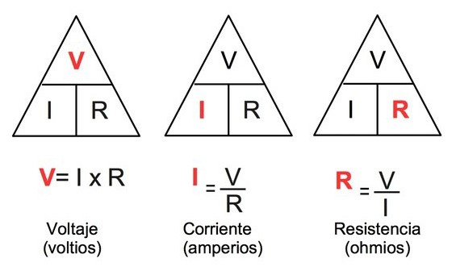
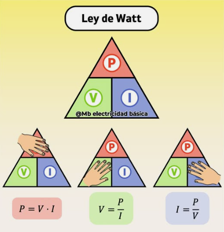

Ley de Ohm
Lo básico sobre voltaje, corriente y resistencia.
Aquí puedes colocar toda la información de la Ley de Ohm.

Lo básico sobre voltaje, corriente y resistencia.
Aquí puedes colocar toda la información de la Ley de Ohm.

Relación entre potencia, voltaje y corriente.
Aquí puedes colocar la información de la Ley de Watt.
La electrónica analógica estudia el comportamiento y control de señales eléctricas continuas. Está presente en cargadores, radios, televisores, sensores, amplificadores y prácticamente todos los dispositivos modernos.
Comprender los conceptos básicos permite entender cómo funciona la energía eléctrica y cómo puede ser utilizada para alimentar o controlar sistemas electrónicos.
La electricidad es una forma de energía producida por el movimiento o acumulación de cargas eléctricas, especialmente electrones.
Es una partícula subatómica con carga negativa responsable del flujo eléctrico.
Es el desplazamiento de electrones dentro de un conductor debido a una diferencia de potencial eléctrico.
Los electrones se desplazan desde el polo negativo hacia el positivo.
La corriente se representa desde el polo positivo hacia el negativo.
Aunque ambos sentidos son opuestos, los circuitos funcionan igual porque solo representan distintas formas de analizar el flujo eléctrico.
Terminal por donde entra la corriente convencional.
Terminal por donde sale la corriente convencional.
Elemento encargado de suministrar energía eléctrica a un circuito.
Dispositivo que transforma la energía eléctrica en otro tipo de energía.
Conjunto de componentes conectados formando un camino cerrado para el paso de corriente eléctrica.
La electricidad se enfoca en transportar energía.
La electrónica utiliza esa energía para controlar señales y hacer funcionar dispositivos inteligentes.
La Ley de Ohm relaciona el voltaje, la corriente y la resistencia.
Porque necesitan una diferencia de potencial eléctrico que impulse su movimiento.
La corriente aumentaría demasiado y podría producir un cortocircuito.
Parte de la energía eléctrica se transforma en calor debido a la resistencia de los materiales.
El cargador transforma el voltaje de la red eléctrica (110V/220V) a un voltaje mucho menor como 5V.
Esto es necesario para evitar daños en el celular.
Parte de la energía también se transforma en calor, por eso el cargador puede calentarse.
Imaginemos una ciudad llena de repartidores:
Circuito simple compuesto por:
Aunque el sentido real y el sentido convencional son opuestos, ambos representan el mismo fenómeno físico: el movimiento de energía eléctrica a través del circuito.
El bombillo enciende porque existe una diferencia de voltaje que impulsa la circulación de corriente.
La mayor energía se encuentra cerca del terminal positivo de la pila.
Después de atravesar el bombillo, parte de la energía se transforma en luz y calor, por lo que el nivel de energía disminuye.